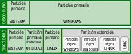

Particiones de disco duro.
Caso práctico
Ana sigue decidida a virtualizar los sistemas con hipervisores de tipo dos, tal como le recomendó Juan. Ada, jefa de la empresa BK Programación, pese a haber dado el visto bueno a la idea, ha decidido que dicho proyecto no necesita presupesto, aunque tiene las ideas claras: quiere un sistema a prueba de fallos.
Su ordenador sólamente tiene dos discos SSD, como la mayoría de los portátiles, y si uno lo dedica a copias de seguridad, tendría que contener los dos sistemas operativos.
Sabe que es un tema de particionamiento del disco, pero desconoce las herramientas y el proceso a seguir.
De nuevo contacta con Juan, que aunque de pogramación web no tiene tantos conocimientos como ella, cuando se trata de utilizar la interfaz de comandos le recuerda a Harry Potter lanzando hechizos mágicos con palabras y órdenes que sólo unos pocos magos conocen.
- Formato de disco duro a bajo nivel.
Todo disco duro viene de fábrica con un formato hecho a bajo nivel mediante el cual se definen de forma permanente sobre la superficie de sus platos una serie de pistas y sectores sobre los que se grabarán los datos que tenga que almacenar. Este tipo de formateo consiste en colocar marcas en la superficie del disco para dividirlo en sectores físicos de 512 bytes e ir numerándolos, para posteriormente poder acceder a ellos cuando sea necesario indicando sus números de cabeza, sector y cilindro.
Durante este formato se crean en su primer sector su MBR (Master Boot Record o registro maestro de arranque) y su tabla de particiones.
Pero antes de que los sistemas operativos puedan grabar ficheros sobre ellos, a los discos duros hay que realizarles dos operaciones imprescindibles: la de particionado y la de formateado.
Salvo los discos ópticos como los CDs y los DVDs, los discos magnéticos, como los discos duros, y las memorias flash, como los pendrives, pueden particionarse y formatearse.
- Particionado de discos duros.
El Particionado del disco es un proceso imprescindible ya que mediante él se establece que una determinada superficie del disco sea tratada como una unidad de almacenamiento con entidad propia e independiente del resto del disco.
Para aprovechar la superficie total del disco puede definirse una sola partición que ocupe todo su espacio con lo que ya no sería posible definir otra más, o podría repartirse su espacio entre varias particiones para poder utilizarlas como si fueran unidades independientes. Incluso se podría dejar espacio sin particionar, pero estaría desaprovechado.
Podemos definir una partición de disco como cada una de las divisiones establecidas en una unidad física de almacenamiento de datos sobre la que se puede montar un sistema de ficheros.
Crear una partición en un disco duro consiste en delimitar que parte de su superficie, aún libre, va a ocupar definiendo dónde empieza, dónde acaba y su tamaño.
Para la gestión de particiones se utilizan aplicaciones específicas incluidas en los sistemas operativos o bien utilidades de terceros. Éstas no sólo crean particiones sino que además pueden realizar otras operaciones sobre particiones tales como formatearlas, borrarlas o redimensionarlas, e incluso, desplazarlas a otra parte del disco siempre que sea posible, por no estar ocupada por otra partición.
Debe tenerse muy en cuenta que borrar una partición supone la perdida automática de los datos que contenga, y que cualquier otra operación como el redimensionado o el desplazamiento de particiones también puede ocasionar la perdida accidental de sus datos.
- Reglas de particionado.
Desde que se empezaron a utilizar los discos duros ha existido un sistema de particionado basado en estructura BIOS. Según este sistema de particionado cada disco duro sólo admite un máximo de 4 particiones llamadas primarias.
Si por cualquier motivo fuese necesario dividir el disco en más de cuatro partes, se tiene la posibilidad de declarar una de estas particiones primarias como extendida, así, será tratada como una partición especial que se puede dividir en numerosas particiones llamadas lógicas.
En la actualidad existen unas nuevas reglas de particionado de reciente implantación que están basadas en el estándar UEFI (Unified Extensible Firmware Interface) cuyo objetivo es establecer el modo en que los sistemas operativos o las aplicaciones de arranque deben acceder a los datos del disco duro.
Los equipos que siguen el estándar UEFI implementan en sus discos duros una nueva forma de gestionar sus particiones mediante la GPT, o Tabla de Particiones GUID, en la que se pueden definir hasta 128 particiones primarias, lo que hace innecesario el uso de particiones extendidas y lógicas.
- Reglas de particionado basadas en BIOS: MBR (Master Boot Record).
Las particiones para los discos duros, basados en BIOS, se definen y describen en una estructura de datos llamada Tabla de Particiones que cada disco se guarda en su primer sector y que por cuestiones de espacio sólo tiene 4 registros, motivo por el cual no puede haber más de 4 particiones de las llamadas primarias.
En cada fila de esta tabla se almacena la información correspondiente a cada una de las 4 posibles particiones primarias que pueden declararse en un disco. Para cada partición que se defina, hay que especificar su principio, en qué sector empieza, su final, en qué sector acaba, y su tamaño, el número de sectores que ocupa. Además hay sitio para poner su identificador de formato y el marcador que indica que es la partición activa, cuando sea declarada como tal. En cada disco sólo puede haber una partición activa y será la que se utilice para iniciar el sistema desde ella, cuando se elija ese disco duro como unidad de arranque. De no definirse las 4 particiones posibles, sus registros correspondientes en la tabla de particiones quedaran vacíos.
Cada disco duro debe tener su propia tabla de particiones guardada en su propio MBR para que el sistema operativo que lo utilice pueda leerla, reconocer las particiones que tiene definidas, y usarlo con normalidad. El hecho de que cada disco duro almacene en su interior su propia tabla de particiones definiendo su estructura interna, hace posible su movilidad para que pueda ser utilizado en otros equipos.
Veamos que según estas reglas de particionado basadas en BIOS tenemos 3 tipos diferentes de particiones:
- Partición primaria: Son las divisiones básicas o primarias del disco. De éstas, como se definen directamente en la tabla de particiones de cada disco duro, sólo puede haber 4, o hasta 3 y una especial llamada extendida. Cada partición primaria será reconocida como una unidad independiente por el sistema operativo y podrá utilizarla para grabar ficheros en ella.
- Partición extendida: También conocida como secundaria, fue ideada para ampliar la posibilidad de usar más de 4 particiones en un solo disco físico. Es un tipo de partición especial que se define como una partición primaria, salvo que su identificador la declara como extendida y en realidad sirve para reservar un espacio de disco sobre el que poder crear hasta un máximo de 23 particiones lógicas. Solo puede existir una partición de este tipo por disco, y solo sirve para contener particiones lógicas. Por tanto, es el único tipo de partición sobre la que no se pueden grabar ficheros ya que no soporta un sistema de archivos directamente.
- Partición lógica: Ocupa sólo una parte, o la totalidad del espacio definido como partición extendida. Una partición lógica siempre se define dentro de la partición extendida, y pueden definirse hasta un máximo de 23 particiones lógicas sin que su tamaño total supere al de la partición extendida que las contiene. Cada partición lógica será reconocida por el sistema operativo como una unidad independiente e igual que una primaria podrá utilizarse para grabar ficheros en ella.
- Reglas de particionado basadas en UEFI: GPT (GUID Partition Table).
Para equipos basados en el nuevo estándar UEFI con el que se pretende sustituir al estándar BIOS, se utilizan unas nuevas normas para la gestión de particiones. Los discos duros basados en UEFI, utilizan una tabla de particiones GPT en la que se pueden declarar hasta 128 particiones primarias. Y por seguridad se mantiene una segunda copia redundante de la tabla de particiones al final del disco duro.
Todo disco duro GPT usa el método de direccionamiento LBA (Logical Block Addressing) para especificar la localización de los bloques que lo forman y que se estructuran como sigue:
- LBA 0.
En el primer bloque de cada disco, o LBA 0, se sitúa un MBR "heredado", que se mantiene por compatibilidad con el anterior esquema BIOS y como protección contra antiguas herramientas software de disco duro, tipo administrador de discos de Windows NT, de Linux, o versiones antiguas de aplicaciones de particionado de discos, que no reconocen el particionado GPT y no saben cómo acceder correctamente a sus particiones.
Es un MBR de protección que declara en su tabla de particiones la existencia de una única partición GPT que abarca toda la unidad, cuyo System Id es 0xEE, o sea tipo GPT.
Cuando algún software intenta acceder a una unidad de disco GPT, empieza por leer la tabla de particiones de su MBR y detecta una única partición de tipo 0xEE. Ahora pueden pasar dos cosas:
- Si es un software antiguo que no sabe interpretar ese tipo de particiones, verá el disco como una sola partición de tipo desconocido que ignorará automáticamente ya que no sabe utilizarla. De esta manera se evita que algún software pueda estropear su contenido por malinterpretar y manejar indebidamente su verdadera estructura.
- Si el software sí reconoce el identificador como partición tipo GPT, ya sabe que debe acceder directamente al siguiente bloque en el que se encuentra la verdadera tabla de particiones que representa la estructura real del disco y que podrá interpretar y utilizar adecuadamente.
- LBA 1.
En este bloque se sitúa la cabecera primaria de la tabla de particiones en la que se definen los bloques de disco que están disponibles para ser utilizados por los sistemas operativos para su uso normal. Pero la tabla de particiones primaria en sí continúa en los bloques sucesivos.
- Desde LBA 2 a LBA 33. Entradas de partición.
Para discos no superiores a 2 Terabytes sería conveniente seguir utilizando el sistema MBR, ya que algunos sistemas operativos de 32 bits son incompatibles con el sistema GPT, y perderían capacidad de portabilidad, sobre todo si son discos duros externos. Pero para discos con capacidades superiores a esos 2 Terabytes, que probablemente será necesario dividir en más de cuatro particiones, empieza a ser más que recomendable utilizar el sistema de particionado GPT.
- LBA 0.
Para saber más
En el siguiente enlace puedes encontrar más información acerca del sistema MBR
- Reglas de particionado basadas en BIOS: MBR (Master Boot Record).
- Identificación de particiones como unidades.
Independientemente del tipo de disco al que pertenezca, o de cómo esté definida desde el punto de vista lógico cada partición, ya sea primaria o lógica, será tratada por cualquier sistema operativo, que la reconozca, como un disco individual y la identificará de forma inequívoca.
Por ejemplo, los sistemas operativos de Microsoft tratan cada partición como una unidad independiente de las demás. Para identificarlas y reconocerlas les asigna letras aplicando el siguiente orden de prioridades:
- Siempre comienza por las unidades de disquete asignado las letras A: y B: si es que existen. Si en el equipo no están instaladas estas unidades, sus letras no son asignadas y no se utilizan.
- Continúa asignando letras, siguiendo el orden alfabético, a las unidades (particiones primarias) de discos duros (C:, D:,...), unidades ópticas (continuando el orden anterior) y unidades de memoria flash. No obstante este orden puede ser alterado.
Por su parte los sistemas GNU/Linux también tratan las particiones como unidades independientes, pero utilizan otra nomenclatura para identificarlas. Se utiliza un prefijo con el que reconocer el tipo de dispositivo seguido de un número (empezando desde 0) que lo identifica de forma inequívoca:
- A las unidades de disquete se las nombra con el prefijo fd0, fd1, etc. si es que existen.
- A los discos duros y unidades ópticas (IDE) se los nombra con el prefijo hd seguido de una letra, en orden alfabético, según el orden en que han sido reconocidos por la BIOS. Seguidamente se les pone un numero (empezando desde 0) para identificar a cada partición. La primera partición lógica dentro de la extendida, si la hay, será siempre la 5 con independencia de que existan las anteriores. Por ejemplo: la primera partición de un disco duro siempre será hda0, hdb0 o hdc0, etc.
- A los discos duros y a las unidades ópticas (SCSI y SATA) e incluso a las unidades de memoria flash se los nombra de igual forma que a los de tipo IDE pero utilizando el prefijo inicial sd. Así por ejemplo: sda0 puede estar identificando a la primera y probablemente única partición de un pendrive insertado en un puerto USB.
- Formato de las particiones.
Una vez definida una partición hay que aplicarle un proceso de formateo a alto nivel, o simplemente formateo, con la utilidad del sistema operativo que la va a utilizar para grabar sus ficheros en ella, o con utilidades de terceros.
Este proceso consiste en implantar sobre los sectores físicos de la partición un sistema lógico de almacenamiento, o sistema de archivos, que permita manejar toda su capacidad con eficiencia. Dicho de otro modo: Formatear una partición de un disco duro es un proceso que implanta en su superficie un sistema de archivos, o sea, que organiza el espacio de la partición con estructuras lógicas que un sistema operativo reconoce y utiliza para almacenar datos de forma permanente.
Durante el formateo los sistemas de Microsoft suelen crear tablas de asignación de ficheros en las que se registrará información acerca de los directorios y los ficheros que contendrá. Mientras que en los sistemas GNU/Linux se crean bloques de i-nodos, de punteros, de datos, etc. para implementar sus sistemas de ficheros.
Además mientras se formatea se hace una revisión de la superficie magnética del disco, y si se detectan sectores defectuosos se marcan como erróneos para no usarlos. Debe tenerse en cuenta que al formatear una partición que ya se haya usado, se perderá todo su contenido.
- Sistemas de ficheros.
Las particiones de un disco duro son independientes entre sí y cada una debe tener su propio formato y su propio sistema de ficheros.
Toda partición debe tener definido un formato o sistema de archivos, para que el sistema operativo que la maneje pueda controlar su espacio libre y su espacio ocupado, para grabar o localizar la información que contiene. Ya que si una partición no tiene ninguna clase de formato, no será reconocida por ningún sistema operativo como unidad utilizable para almacenar datos en ella.
Por tanto a cada partición, ya sea primaria o lógica, hay que darle un formato mediante algún sistema de archivos existente como FAT, FAT32, NTFS, ext2, ext3, ext4, ReiserFS, Reiser4 o cualquier otro. Pero teniendo en cuenta que debe ser compatible con el sistema operativo que la va a utilizar, ya que no todos los sistemas de archivos son reconocidos por todos los sistemas operativos.
Debe ser el usuario el que decida qué formato se debe aplicar a cada partición en función del sistema que lo vaya a utilizar y del uso que vaya a dar a la partición. Pero debe decidirlo condicionado por si el sistema operativo reconoce el tipo de sistema de archivos, por la seguridad que necesite implementar, por la capacidad de la partición, etc.
Los sistemas operativos actuales, son capaces de reconocer y utilizar distintos sistemas de ficheros, pero sólo pueden trabajar con los sistemas de ficheros que reconocen.
En cuanto a sistemas de ficheros, podemos encontrar multitud de tipos, entre los que podemos destacar:
- Para Windows: FAT, FAT16, FAT32, NTFS, EFS.
- Para Linux: ext2, ext3, ext4, JFS, ReiserFS, XFS (más los anteriores de Windows).
- Para Mac: HFS, HFS+.
Y no hay que confundir el tipo de formato o sistema de archivos de las particiones, por ejemplo: NTFS de Windows, con el tipo de partición que lo contiene, por ejemplo partición primaria.
- ¿Cómo ve Windows las particiones?
Particiones de sistema y particiones de arranque son nombres de particiones que Windows usa al instalarse en un disco duro basado en BIOS.
- La partición de sistema contiene los archivos utilizados para localizar y arrancar Windows.
- La partición de arranque contiene los archivos propios del sistema operativo.
La partición de sistema contiene los archivos relacionados con el hardware y la carpeta de arranque que le indican al equipo dónde mirar para iniciar Windows. Cuando Windows se instala desde cero en un disco duro no particionado, de forma predeterminada, crea una partición de sistema separada. También lo hace cuando existan, antes de la instalación, menos de tres particiones primarias. Windowscrea esta partición con un tamaño de 100 MB. Y la declara como activa para que el equipo se inicie desde ella.
Es una partición independiente que no contiene ficheros propios del sistema operativo, sólo contiene indicaciones para localizar y cargar un sistema operativo que está instalado en otra partición. Para proteger esta partición de sistema, y evitar que se dé formato de nuevo o que se elimine, Windowsla mantiene separada del resto de particiones y no le asignará una letra de unidad automáticamente. Por lo que la partición no aparecerá en el Explorador de Windows; evita con ello un uso accidental de la misma, aunque puede aparecer en herramientas tales como Administración de equipos.
Cuando el equipo arranca, usa la información almacenada en la partición de sistema para iniciarse.
La partición de sistema se puede utilizar para:
- Administrar y cargar otras particiones. Si el equipo está configurado como arranque dual o arranque múltiple es porque tiene instalado más de un sistema operativo de Microsoft tales como por ejemplo, Windowsy Windows Vista. En este caso, al iniciarse el equipo, se muestra una lista de los sistemas operativos que hay instalados para que el usuario pueda seleccionar el sistema operativo con el que debe arrancar la máquina en cada ocasión en función del que desea utilizar. Sólo puede existir una partición de sistema en un equipo, incluso aunque el equipo esté configurado como de arranque dual o arranque múltiple.
- Usar herramientas de seguridad cuando el equipo haya sido configurado para ejecutar el Cifrado de unidad BitLocker.
- Usar herramientas de recuperación siempre y cuando se haya instalado en el equipo el Entorno de recuperación de Windows (Windows RE).
La partición de arranque es una partición que contiene los archivos pertenecientes a algún sistema operativo Windows. Por ejemplo, si tiene un equipo con arranque múltiple que contiene Windows Vista en una partición y Windowsen otra, cada uno de dichos volúmenes se consideran particiones de arranque.
La partición de sistema y la de arranque pueden ser la misma. Existirá sólo una, si Windowsse ha instalado actualizando a un sistema anterior alojado en la única partición del disco.
Cuando Windowsse instala en un disco basado en BIOS utiliza las particiones de esta manera:
Ejemplos de estructuras de partición de disco que incluyen particiones primarias, extendidas y lógicas.
Cuando Windowsse instala en un disco basado en UEFI (Unified Extensible Firmware Interface) utiliza las particiones de esta otra manera:
- Una partición de sistema EFI. Todo disco duro de arranque debe contener esta partición.
- Una partición reservada de Microsoft (MSR) con 128 MB de capacidad. Debe estar definida entre la partición de sistema EFI y la del sistema operativo Windows. Esta partición que sólo existe en sistemas UEFI, contiene información relativa a otras particiones del sistema para ser utilizada por aplicaciones de Microsoft.
- Hasta 128 particiones primarias, que pueden ser utilizadas bien para instalar sistemas operativos como Windows o Linux, o bien como almacenamiento de archivos. Al menos en una de ellas estará instalado Windows 7.

- Discos básicos y dinámicos.
Desde la aparición de Windows 2000 se ha sumado al tradicional disco básico, un nuevo tipo de almacenamiento conocido como dinámico que se basa en la utilización de volúmenes. Se define Volumen como una unidad de almacenamiento creada a partir de espacio libre en uno o más discos, que se puede formatear con un sistema de archivos y a la que se le puede asignar una letra de unidad.
Discos básicos.
Son los discos basados en MBR que han existido desde siempre, los que pueden tener hasta cuatro particiones primarias que ahora se han dado en llamar volúmenes básicos. También se pueden tratar como discos básicos las particiones definidas en los nuevos discos tipo GPT con tablas de particiones basadas en GUID que pueden llegar a tener hasta 128 particiones primarias de 18 exabytes.
Los discos básicos se caracterizan por su simplicidad y por ser fáciles de manejar.
Discos dinámicos.
Es un método de almacenamiento soportado por todos los sistemas operativos de Microsoft con versiones posteriores a Windows 2000. Aunque no todo los tipos de volúmenes posibles están disponibles en todas las versiones de Windows. Si con los discos básicos tratábamos con particiones y unidades lógicas, en los discos dinámicos tenemos que hablar de volúmenes dinámicos.
Su principal característica está en que la información relativa al formato del disco se guarda en un fichero de base de datos con tamaño de 1 MB situado al final del disco que se replica en todos los discos dinámicos del sistema y que contiene la información de todos los discos dinámicos.Los discos dinámicos tienen nuevas características y funcionalidades que no tienen los discos básicos. Por ello se suele trabajar con discos dinámicos cuando es necesario aplicar alguna de sus funcionalidades, como por ejemplo cuando haya que crear un volumen extendido en RAID 0/1/5 por software.
Este tipo de volúmenes pueden ser de 5 tipos: reflejados, distribuidos, simples, seccionados, y RAID-5.
- Volumen reflejado: Para implementar un volumen reflejado, también llamado RAID-1, o espejo, se utiliza normalmente un par de discos de las mismas características que aparecen como una única entidad. Cuando se escribe cualquier dato en el volumen reflejado, se realiza la misma operación de escritura simultáneamente sobre ambos discos. Con ellos se consigue una mayor fiabilidad de los datos almacenados, ya que de fallar uno de los discos, el sistema podría seguir funcionando con el otro. Se pierde capacidad de almacenamiento en beneficio de la fiabilidad.
- Volumen distribuido: Los volúmenes distribuidos se utilizan para reunificar áreas de espacio no asignado de distintos discos en un único volumen lógico, en lugar de tener muchos volúmenes de pequeño tamaño, lo que permite utilizar de forma más eficiente el espacio total disponible. Este tipo de volumen no puede ser reflejado y no es tolerante a errores, aunque permite extender su tamaño a nuevas unidades disponibles.
- Volumen simple: El volumen simple sirve para tratar todo el espacio libre del mismo disco como un único volumen, ya sea una única zona de disco, o sean varias zonas repartidas por su superficie. Este tipo de volumen permite ser reflejado, aunque no es tolerante a errores. Un volumen simple se puede ampliar dentro del mismo disco siempre que le quede espacio libre. También puede extenderse a través de varios discos, pero entonces se convierte automáticamente en volumen distribuido.
- Volumen seccionado: También conocida como RAID-0, se trata de una variante del volumen distribuido porque utiliza el espacio de varios discos para tratarlos como una única unidad lógica. En un volumen seccionado se utiliza un tipo especial de formato para escribir, se distribuyen los datos intercalándolos uniformemente entre todos los discos físicos que utiliza. Un volumen seccionado no se puede extender ni reflejar. Es el tipo de volumen dinámico que ofrece mayor rendimiento pero por otro lado es el menos fiable ya que si uno de los discos implicados en el volumen seccionado falla, fallará el resto del volumen, y se perderá el acceso a sus datos. Y sufre más fallos de escritura que los volúmenes distribuidos.
- Volumen RAID–5: Un volumen RAID-5 es un volumen tolerante a errores cuyos datos están distribuidos a lo largo de una matriz de tres o más discos. Pero en caso de que uno de los discos falle se pueden recuperar los datos. Para ello se utiliza la paridad, que es un valor calculado a partir de los datos almacenados, que se usa para reconstruir los datos después de producirse algún error en un disco físico. La porción de datos grabados en el disco erróneo se puede volver a crear a partir de la paridad y de los datos restantes. Un volumen RAID-5 no se puede reflejar ni extender.
Para saber más
|
Sistemas de ARchivos
|

Para saber más
|
Herramientas de disco en Linux
|